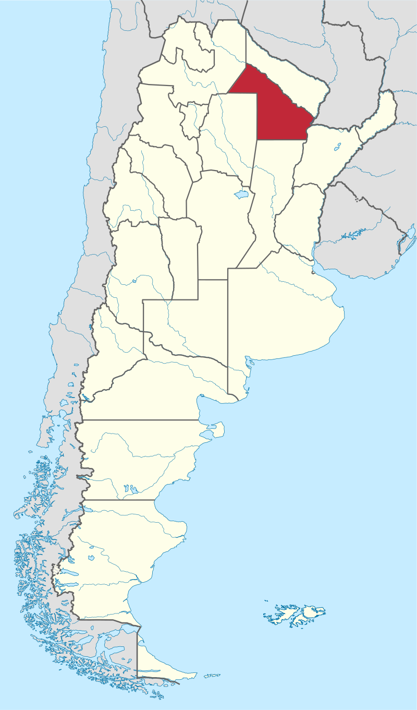

Provincia del Chaco (tal como figura en su Constitución provincial),Chaco es una de las 23 provincias de la
República Argentina. A su vez, es uno de los 24 estados autogobernados que conforman el país y uno de los
24 distritos electorales legislativos nacionales.
Está ubicada en el noreste del país, en la región del Norte Grande Argentino, limitando al norte con los ríos
Bermejo y Teuco que la separan de Formosa, al este con los ríos Paraguay y Paraná que la separan,
respectivamente, de la República del Paraguay y la provincia de Corrientes, al sur con Santa Fe, al oeste
con Santiago del Estero y al noroeste con la provincia de Salta. Tras su última actualización de límites, posee
una superficie de 99633 km², lo que la ubica como la 12.ª provincia más extensa del país, prácticamente a mitad
del listado de distritos por tamaño.
Chaco es una de las regiones argentinas menos estudiadas desde el registro arqueológico, por lo cual se
carece
de datos fidedignos sobre los procesos de ocupación del territorio.
Se supone que los primeros
pobladores se
asentaron en la región durante el IV milenio a. C.
El primer europeo, según muchas fuentes, portugués pero al servicio de la corona española, que atravesó el Gran
Chaco fue Alejo García, quien se internó en busca de yacimientos del Potosí. También lo exploraron Sebastián
Gaboto en 1528 recorriendo el río Paraná y el río Paraguay hasta la desembocadura del río Bermejo, Juan de
Ayolas, Domingo Martínez de Irala, Álvar Núñez Cabeza de Vaca, entre otros. La primera fundación española en
tierras del Chaco fue la realizada por Alonso de Vera y Aragón y Calderón el 14 de abril de 1585,
con el
nombre de Concepción de Nuestra Señora, en las cercanías de la actual localidad de Tres Isletas.
Con esta
fundación comenzó la acción misional en la que se destacó el franciscano San Francisco Solano, recordado por su
respeto a las culturas aborígenes. En 1585, llegaron a la región los primeros misioneros de la Compañía de
Jesús: Alonso de Bárcena y Francisco de Angulo.
Acompañados más tarde (1590) por Pedro Añazco y Juan
Font quienes iniciaron la evangelización de los pueblos guaycurúes. Tras la destrucción de la primera Concepción
del Bermejo en 1632, recién a mediados del siglo XVIII misioneros jesuitas volvieron a crear reducciones, como
la de San Bernardo de Vértiz, La Cangayé y San Fernando del Río Negro en las proximidades del asiento de la
antigua ciudad destruida, sin embargo estas reducciones en el Chaco Austral tuvieron poco éxito y no llegaron al
siglo XIX.
En 1811, entre la Junta Grande del Río de la Plata y la Junta Gubernativa de Asunción, establecía que los límites entre las intendencias de Buenos Aires y del Paraguay, permanecerían como se hallaban hasta que un Congreso General los defina, por lo que no se establecieron límites entre ellas, en el Gran Chaco.
El Congreso de la Nación dispuso por ley 14037 del 8 de agosto de 1951 crear una nueva provincia que tuviera
jurisdicción en lo que hasta ese momento había sido el territorio nacional del Chaco. La misma se constituyó en
1952,
mediante una asamblea constituyente democráticamente electa, que sesionó entre el 17 y el 21 de
diciembre de 1951, sancionando la constitución provincial y eligiendo el nombre que habría de designar:
«provincia Presidente Perón».
La nueva constitución provincial introdujo como novedad en el sistema político argentino al establecer que la
mitad de los miembros de la Cámara de Representantes sería elegida por votación popular y la otra mitad "será
elegida por los ciudadanos
que pertenezcan a las entidades profesionales que se rigen por la ley nacional de
asociaciones profesionales, debiendo estar integrada la lista de candidatos con miembros de esas entidades"
En septiembre de 1955, el presidente de facto Eduardo Lonardi, cuando aún se encontraba en Córdoba y antes de
asumir el cargo, dispuso anular el nombre elegido por la asamblea constituyente para la provincia,
y
estableció que se la debía designar con el nombre que le había impuesto el decreto del presidente Domingo F.
Sarmiento en 1872, al incorporarla como territorio nacional.
El 27 de abril de 1956, el presidente Pedro Eugenio Aramburu dictó una proclama anulando la constitución nacional
vigente y las constituciones provinciales, incluyendo la chaqueña. De este modo la provincia del Chaco quedó sin
constitución.
En 1957 la dictadura convocó a elegir una asamblea constituyente provincial, pero con la
prohibición legal de que el partido peronista se presentara en las elecciones. El resultado fue la sanción de la
Constitución chaqueña de 1957,
cuya legitimidad estuvo en discusión, debido a que no fue sancionada
democráticamente.
El territorio de esta provincia se halla íntegro en el sector chaquense llamado Chaco Austral; posee un relieve
llano y aluvial, con una muy leve inclinación de noroeste a sudeste. Esta característica se hace evidente en la
dirección de los cursos fluviales muchas veces divagantes. Los suelos son en su mayoría arcillosos, lo que
sumado a la escasa pendiente dificulta el escurrimiento de aguas y forma numerosos bañados, esteros y lagunas
semipermanentes.
El sur de la provincia presenta las zonas de mayor inundación (los Bajos Submeridionales),
en ella se practica solo la ganadería extensiva y es la zona con menor potencial productivo.
Un palmar de caranday (Copernicia alba) en el acceso a Resistencia desde Corrientes, un paisaje típico del
sector oriental del Chaco.
En el norte y oeste, el bosque llamado El Impenetrable ocupa casi la totalidad del territorio; sus tierras
constituyen una de las últimas zonas aún fuera de la frontera agrícola. La conciencia de la importancia
ecológica de esta foresta fue creciendo en los últimos años; sectores ecologistas libran una dura batalla para
que los desmontes —merced a los buenos precios y rindes de la soja— no diezmen su tamaño.
Líneas convencionales la separan al oeste de las provincias de Salta y Santiago del Estero, al sur el paralelo
28º Sur la separa de Santa Fe.
grandes ríos constituyen la frontera oriental y boreal: al este el río Paraguay (que la separa de la
República del Paraguay ) y el río Paraná, que la separa de la provincia de Corrientes; al Este y norte limita con
Formosa mediante el río Bermejo y su afluente,el río Teuco.
El clima en toda la provincia es semitropical. El tipo climático correspondiente a la mitad este es el
semitropical semiestépico, mientras que en la mitad oeste cambia a semitropical continental.
La mínima registrada en la provincia fue en la ciudad de Las Breñas, con -10 ºC el 17 de julio de 2010.La máxima
fue de 55 ºC en la ciudad de Presidencia Roque Sáenz Peña.
Los veranos son muy calurosos; los inviernos,
templados. La distribución anual de las lluvias es muy despareja, se alternan los épocas de sequía total y otras
en las que los humedales crecen en forma desmesurada.
La influencia de los vientos húmedos que llegan desde al Atlántico determina que el sector oriental reciba
un monto mayor de precipitaciones, con niveles promedios que superan los 1500 mm anuales.
Hacia el oeste se
ingresa en un clima cada vez más continental, donde la amplitud térmica es mayor y el clima más seco,
especialmente en el invierno pues sufre de una marcada estación seca. El monto de las precipitaciones acumula
solo cerca de 600 mm anuales en el extremo oeste.
En el este de la provincia del Chaco, la zona de humedales, parte de la subregion del corredor fluvial Paraná–Paraguay , fue declarada en 2004 como sitio Ramsar de importancia a nivel internacional
La vegetación refleja la desigual distribución de lluvias y ofrece un bosque cerrado al oeste (El Impenetrable)
un paisaje de parques y sabanas en el centro y las selvas en galerías que bordean los ríos del oeste.
Las
palmeras- sobre todo la caranday- son típicas de los pastizales cercanos a los ríos Paraguay y Paraná, al punto
que una palmera es el principal dibujo dentro del escudo provincial.
El desarrollo primigenio de la provincia está relacionado con la explotación de los bosques de quebracho y la
producción de algodón, que en la actualidad es uno de sus principales cultivos y provee el 60% del total
nacional. Luego la industria fue cobrando un lugar cada vez más importante hasta que comenzó a perder vigor a
mediados de la década de 1970.
A partir de allí ninguna actividad pudo suplir de forma eficaz esta pérdida
de fuentes genuinas de trabajo hasta que a fines del 2010 y comienzo de 2011, el algodón volvió a ser el cultivo
más importante para la provincia y la región
El Chaco ha tenido personalidades del arte tales como Luis Landriscina, Rolando Chaves, Aledo Meloni, Zitto Segovia, Elio Roca y Oscar Alemán. El Autódromo Santiago Yaco Guarnieri ha albergado carreras de automovilismo del TC 2000 y el Top Race. El principal piloto chaqueño ha sido Juan Manuel Silva. En golf se ha destacado Emiliano Grillo, ganador en el PGA Tour. Desde 1988, cada 2 años se celebra en Resistencia la Bienal internacional de esculturas, donde los artistas trabajan al aire libre y a la vista del público durante una semana. Las esculturas se instalan luego en las calles de la ciudad haciendo de Resistencia "la ciudad de las esculturas".